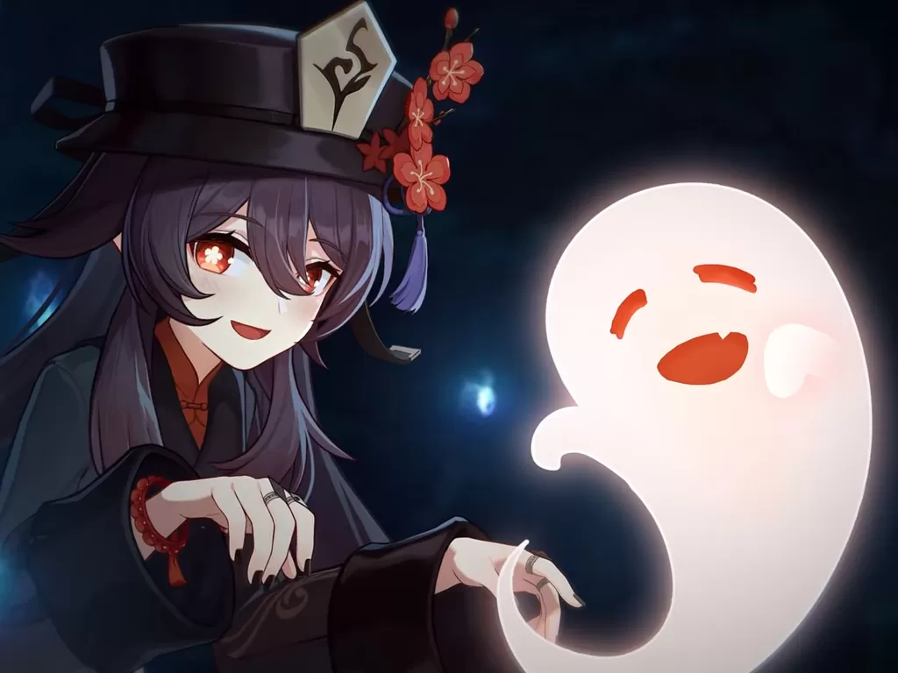
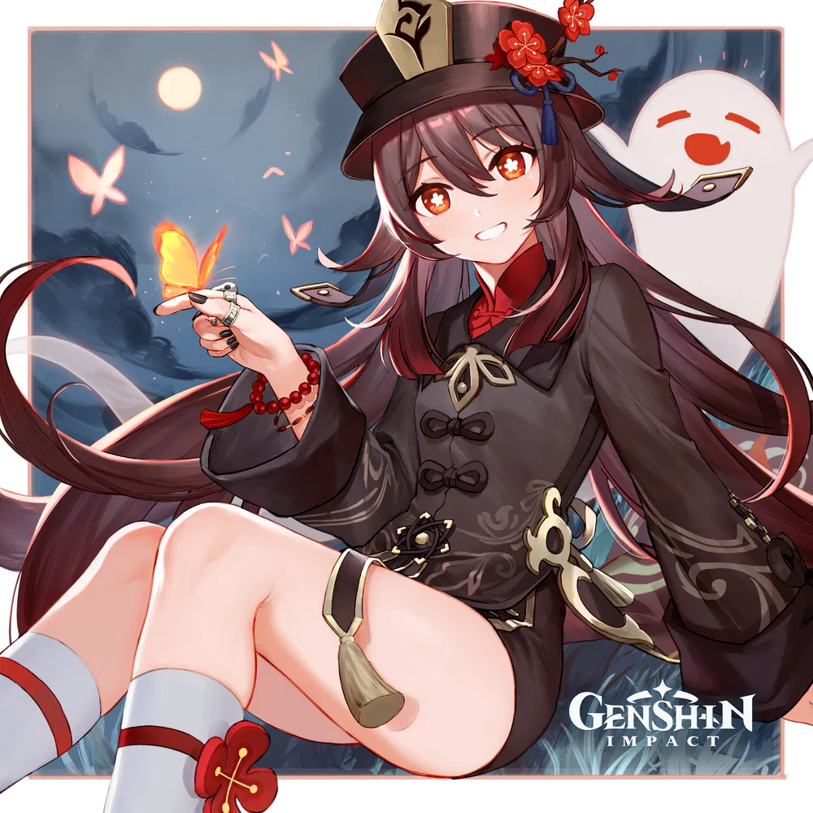
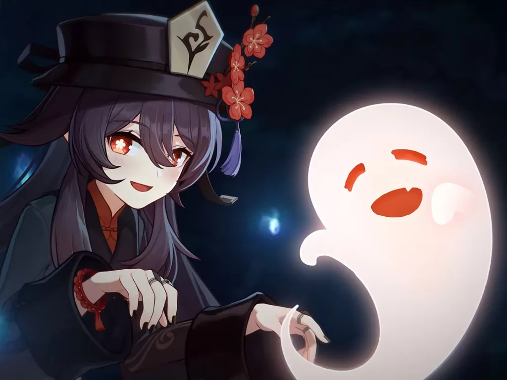
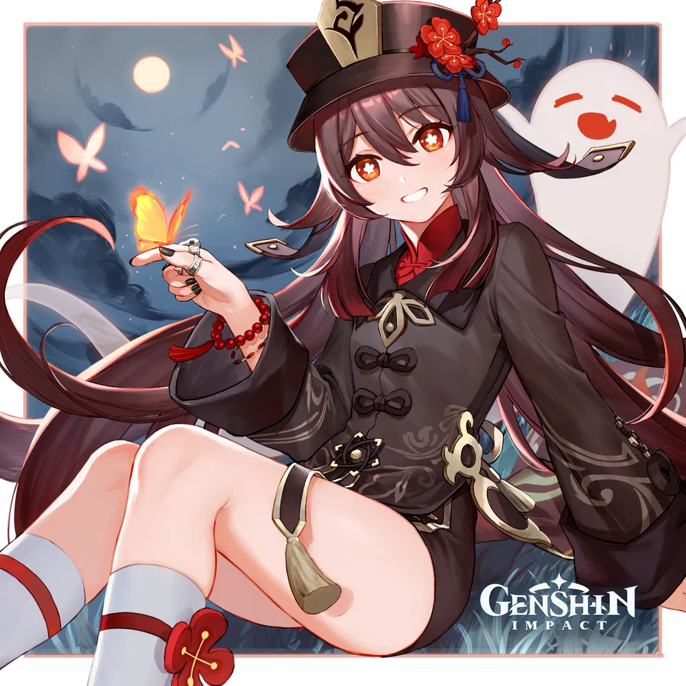

Daftar Isi
- Personal Data
- Pendidikan dan Pengalaman
Personal
| Hu Tao (胡桃) dari Genshin Impact | |
|---|---|
|
Hu Tao adalah karakter Pyro yang dapat dimainkan di Genshin Impact . Kejenakaan dan eksentrisitas Hu Tao memungkiri perannya sebagai Direktur ke-77 Rumah Pemakaman Wangsheng dan bakatnya sebagai penyair. Meskipun demikian, dia memperlakukan operasional ruang tamu dengan sangat penting, dan mengadakan upacara pemakaman dengan martabat dan kekhidmatan tertinggi. |
|
|
Penampilan : Hu Tao menggunakan model wanita medium . Dia memiliki kulit yang cerah; mata merah cerah dengan pupil putih berbentuk bunga; riasan merah pudar di sudut matanya; dan rambut panjang berwarna coklat tua memudar menjadi merah tua di ujungnya. |
|
Pengisi Suara:
|
|
| Perilisan Karakter : 2 Maret 2021 | |
| Foto | |
 



|
|